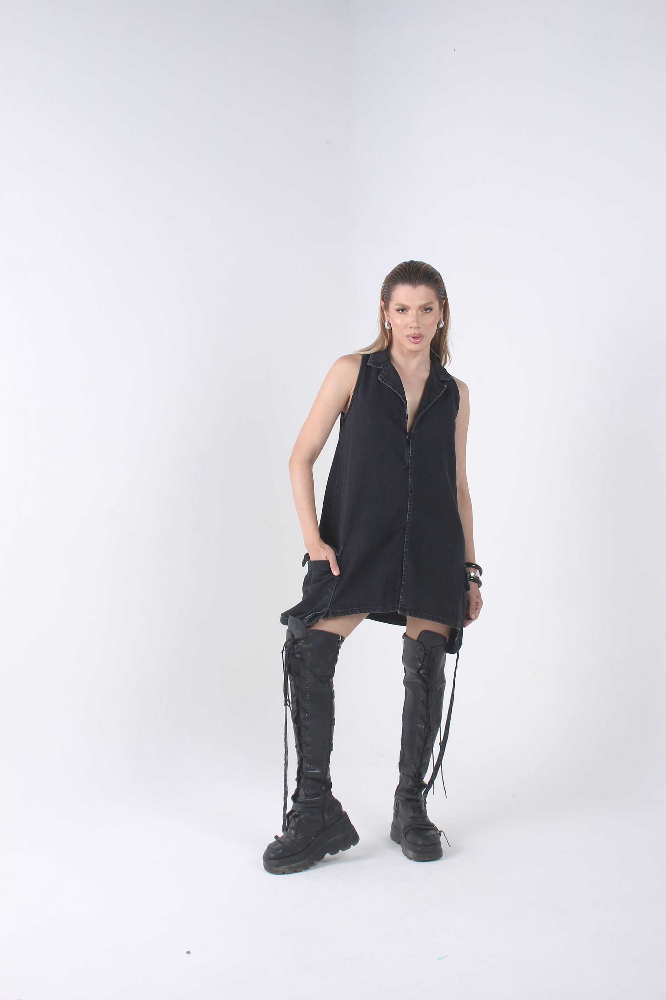
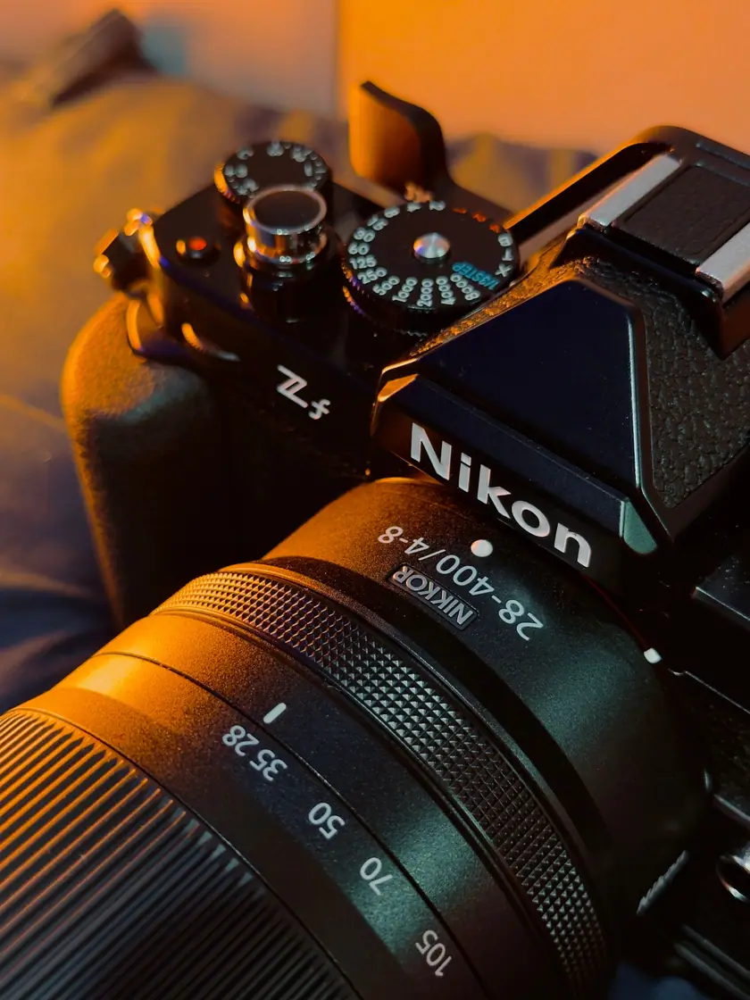
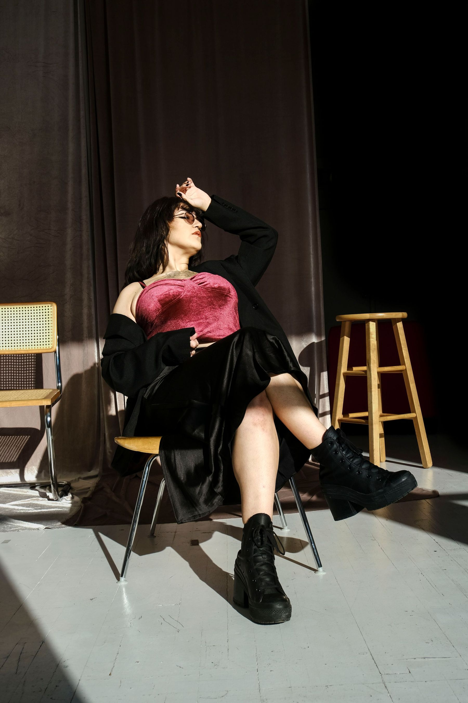
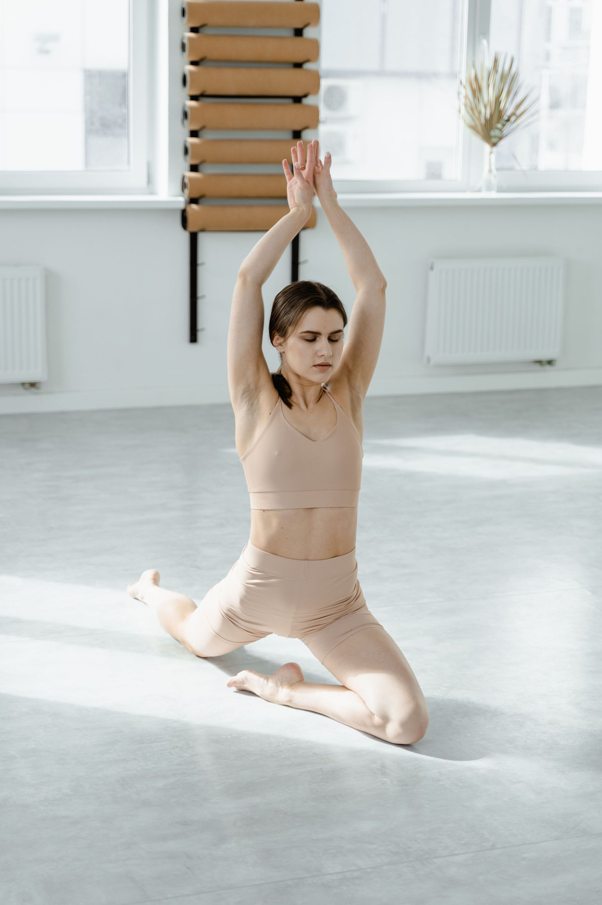
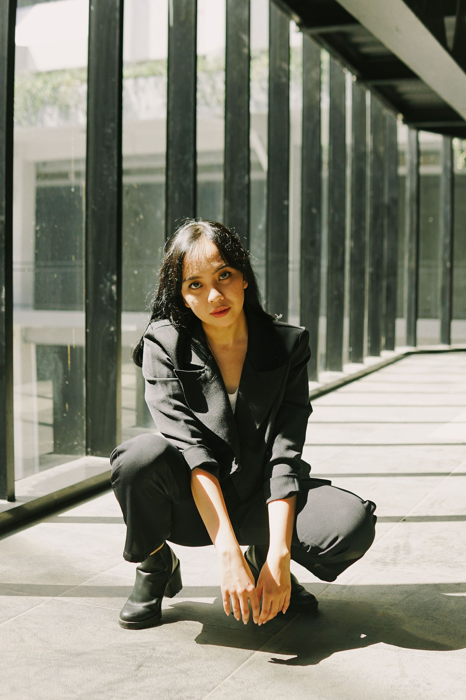
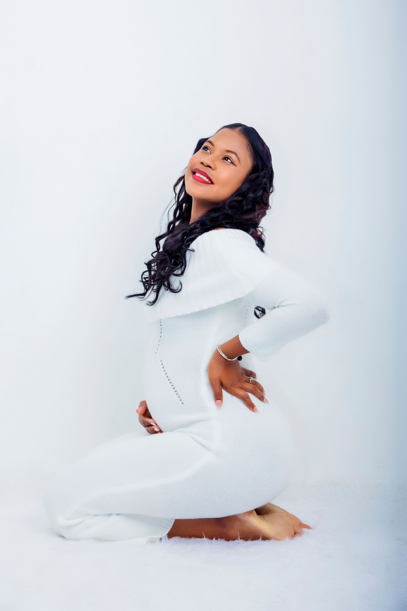

Signature
Un retrato con tiempo.
Luz quieta y dirección precisa, para una imagen que se queda.
Inversión [POR CONFIRMAR]

Desliza

Signature
Luz quieta y dirección precisa, para una imagen que se queda.
Inversión [POR CONFIRMAR]

Studio
Set, luz de estudio y alguien que te acomoda. Retrato, pareja o lo que toque ese día.
Inversión [POR CONFIRMAR]

Biometrics
Sesiones para clínicas, marcas de salud y quien quiere verse con claridad. Encuadre cuidado, de frente.
Inversión [POR CONFIRMAR]

Corp
Retrato ejecutivo, producto y eventos. El sábado 31 de octubre recibimos a Farmasi en el estudio. Si quieres tu sesión, escríbenos.
Inversión [POR CONFIRMAR]

Pop
Infancia, maternidad, fiestas y sets de estación. El parque queda afuera: luz de día y luego el set.
Inversión [POR CONFIRMAR]